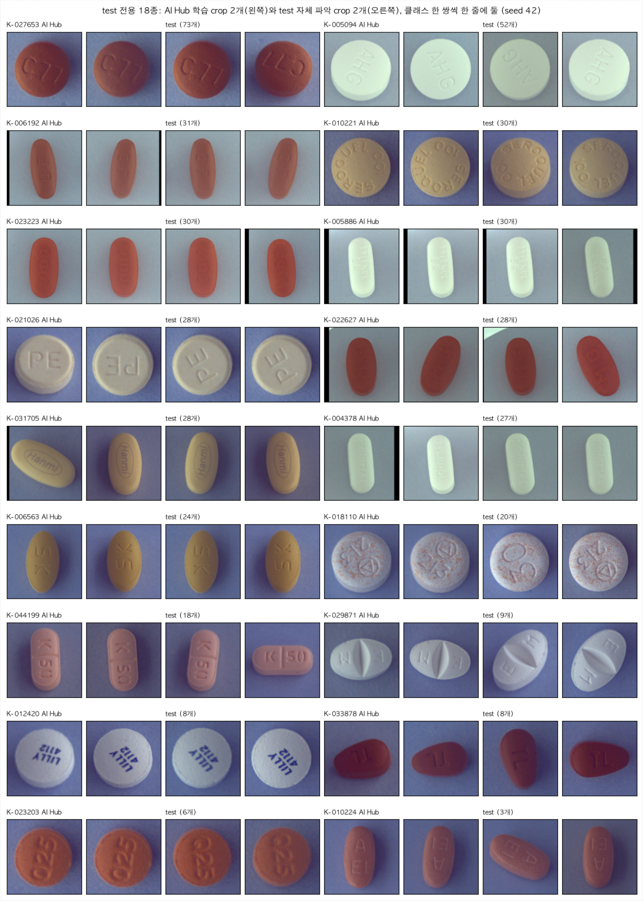

1
/
0
2차 EDA
test 전용 18종을 AI Hub에서 모두 찾았습니다.
금지 파일(TL_2·TS_2)을 뺀 AI Hub 조합 데이터 8쌍을 받아, test에서 읽은
각인과 대조
해 18종을 찾았습니다.

18 / 18종
AI Hub에서 찾은 test 전용 알약
60.2% → 100%
모든 알약이 학습 클래스에 있는 test 사진
56 → 118종
합친 학습 클래스
232 → 12,206장
합친 이미지
▦
← →/Space 이동 · N 노트 · Esc 목차
SPEAKER NOTES